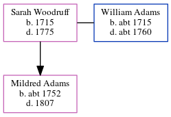

Sarah Adams (née Woodruff) 1715 - 1775
[ Home ] | [ Calendar ] | [ Surnames Index ] | [ Census Index ] | [ Family History ]Sarah Woodruff, the 6 times great-grandmother of Nigel Horne, was born in Ash, Kent, England in 1715 and married William Adams (with whom she had 1 child, Mildred) in Ash on Oct 2, 17391.
She died in 1775 in Ash and was buried there at St Nicholas on Mar 13, 1775.
Children
- Mildred was born c. 1752
Citations
- England, Select Marriages, 1538–1973 Ancestry.com Operations, Inc.
Media
Canterbury Burials Image - GBPRS-CANT-PB328-CCA-ASH-REG-4-BURIALS-1747-1812-00015
Family Tree
Generated by ged2site. Last updated on Jun 11, 2024